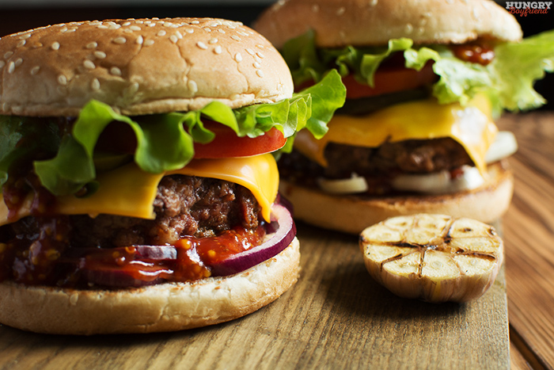

Домашний бургер
Что нам пригодится:
- Булочки.
- Помидоры. 1-2 шт. Хорошие, большие, которые можно нарезать крупными кружками.
- Лук – 1-2 луковицы. Можно синий, можно обычный. Кто какой любит.
- Салат.
- Сыр чеддер – 1 упаковка. На 1 бургер у меня уходило 2 пластинки.
- Маринованные огурчики – 1 банка.
- Кетчуп (для соуса). Кто хочет 2 соуса – можете взять майонез либо сделать соус на основе нежирного йогурта.
- Зернистая горчица (для соуса).
- Соль и перец (можно не покупать, наверняка есть у вас дома).
- Вустерширский соус (по желанию) – 2-3 ч. л.
- Говяжий фарш. На 3 больших бургера ушло 600 г. фарша.

Нижняя обжаренная булочка. Лук.

Соус (кто-то советует класть сначала салат, а потом соус и мясо, чтобы соус и сок из котлеты не размягчали булку). Не жалеем.

На котлеты в конце кладем по 2 кусочка чеддера, буквально на 10 секунд. Он уже начинает плавиться и тут мы подхватываем нашу котлету и кладем в бургер.

Огурчики.

Помидор (стряхните с него лишнюю влагу и сок, чтобы не текла). И салат – вот он как раз тут пригодится, чтобы булка не пропитывалась соком помидора. Второй раз соус.

Верхняя обжаренная булочка.

Ура, наш домашний бургер готов! Как вам, захотелось попробовать? Надеюсь, что да, иначе мы зря старались. Одного такого бургера вполне достаточно, чтобы наесться.